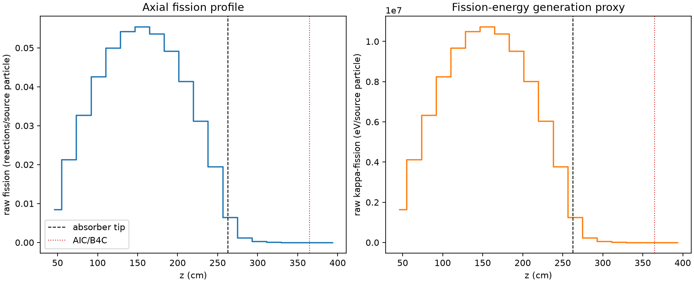
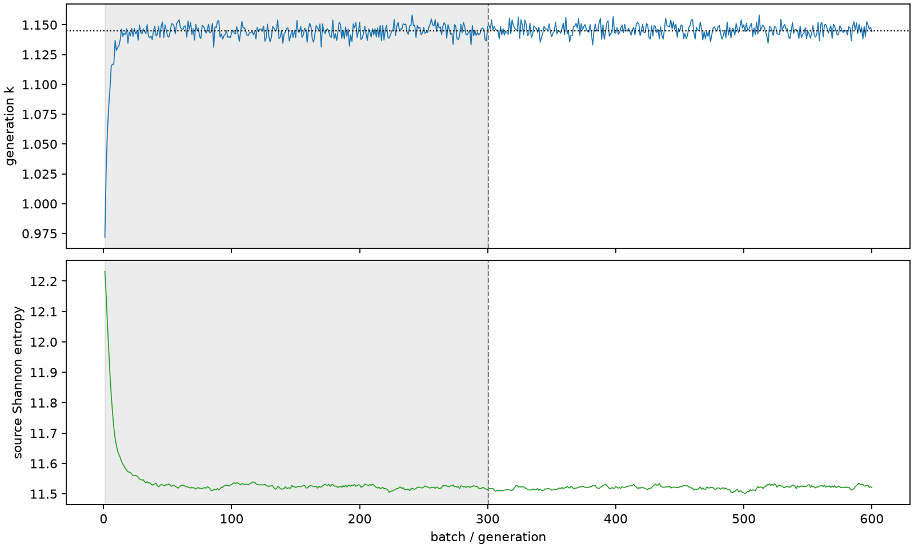

| field | value |
|---|---|
| experiment | V2-STAGE_128_OGRENCI_01-0014 |
| k | 1.1449144956938873 |
| MC standard error | 0.00018162973981423265 |
| seconds | 1029.5298433800053 |
| acceptance | not_assessed |
| convergence | review_required |
Completed is output integrity only; physical and statistical review required. Zero tallies do not prove zero production or zero uncertainty.
| diagnostic | value |
|---|---|
| geometric fuel voxels | 5280 |
| zero fission tally voxels | 301 |
| low signal fuel voxels | 1091 |
| low signal fission share | 6.152563326081723e-05 |
| low signal kappa share | 6.155716774155884e-05 |
| important fission share | 0.9501223987766965 |
| previous filter included | 4189 |
| duration estimate s | 1562.5173488400023 |
| actual minus estimate s | -532.987505459997 |
| fission relative MC error | statistics |
|---|---|
| all_geometric_fuel | {"voxels": 5280, "positive_mean_voxels": 4979, "zero_mean_voxels": 301, "undefined_relative_error_voxels": 301, "median": 0.01048669960211615, "p95": 0.7119880556278831, "maximum": 1.0000000000000002} |
| low_signal | {"voxels": 1091, "positive_mean_voxels": 790, "zero_mean_voxels": 301, "undefined_relative_error_voxels": 301, "median": 0.5320081104335473, "p95": 1.0, "maximum": 1.0000000000000002} |
| important_95pct | {"voxels": 2810, "positive_mean_voxels": 2810, "zero_mean_voxels": 0, "undefined_relative_error_voxels": 0, "median": 0.007542090908258621, "p95": 0.011171101599767527, "maximum": 0.013710730192780279} |
| outside_previous_filter | {"voxels": 1091, "positive_mean_voxels": 790, "zero_mean_voxels": 301, "undefined_relative_error_voxels": 301, "median": 0.5320081104335473, "p95": 1.0, "maximum": 1.0000000000000002} |
| kappa_fission relative MC error | statistics |
|---|---|
| all_geometric_fuel | {"voxels": 5280, "positive_mean_voxels": 4979, "zero_mean_voxels": 301, "undefined_relative_error_voxels": 301, "median": 0.010474523398891107, "p95": 0.7118457866468406, "maximum": 1.0000000000000002} |
| low_signal | {"voxels": 1091, "positive_mean_voxels": 790, "zero_mean_voxels": 301, "undefined_relative_error_voxels": 301, "median": 0.5316865749664443, "p95": 1.0, "maximum": 1.0000000000000002} |
| important_95pct | {"voxels": 2810, "positive_mean_voxels": 2810, "zero_mean_voxels": 0, "undefined_relative_error_voxels": 0, "median": 0.00753387099523618, "p95": 0.011158528988525332, "maximum": 0.013693837416886661} |
| outside_previous_filter | {"voxels": 1091, "positive_mean_voxels": 790, "zero_mean_voxels": 301, "undefined_relative_error_voxels": 301, "median": 0.5316865749664443, "p95": 1.0, "maximum": 1.0000000000000002} |
| axial bin | fission share | kappa-fission share |
|---|---|---|
| 1 | 0.018151183677353827 | 0.01815199430576389 |
| 2 | 0.045568349591011616 | 0.04556835422611978 |
| 3 | 0.06998903261679355 | 0.06998864511390061 |
| 4 | 0.09104424219557185 | 0.09104380452941725 |
| 5 | 0.10676650163678705 | 0.10676588215105975 |
| 6 | 0.11593714475346928 | 0.11593664007945047 |
| 7 | 0.11843049407609066 | 0.11843000685909257 |
| 8 | 0.11466882007888783 | 0.11466855537753945 |
| 9 | 0.10505651691349331 | 0.10505584594043968 |
| 10 | 0.08852720519630976 | 0.08852666277664023 |
| 11 | 0.06680040841094963 | 0.066800135877355 |
| 12 | 0.04173292275250062 | 0.04173272728688902 |
| 13 | 0.013881100410442122 | 0.013883253933139213 |
| 14 | 0.002650214358953448 | 0.00265128679916901 |
| 15 | 0.0006103247740982948 | 0.0006105679613902976 |
| 16 | 0.0001421532089365695 | 0.00014222951735952754 |
| 17 | 3.440072861465318e-05 | 3.4419658437659935e-05 |
| 18 | 8.093009071331435e-06 | 8.095094615589487e-06 |
| 19 | 8.736519048343746e-07 | 8.745339525700439e-07 |
| 20 | 1.7958759770924752e-08 | 1.7978268567025944e-08 |
Histories include the inactive-to-active transition at batch 300. kappa-fission approximates fission energy production, not total heat deposition.

